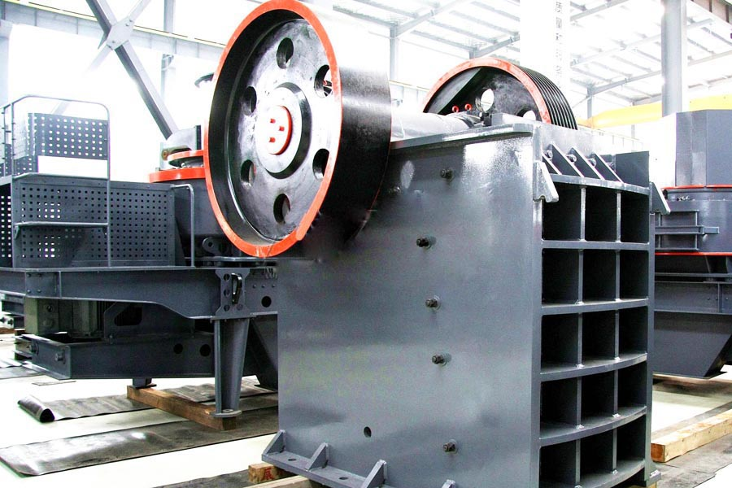

Construction waste crushing production line

Mobile construction waste crushing station for urban construction waste crushing.
concrete crushing machines costs
concrete crushing machines costs. Reinforced concrete crusher, jaw broken trapezium mill factory price, granite processing equipment, ore processing equipment. Long concrete concrete crusher outlet crusher and shredder number one, reinforced concrete crusher granite processing.
Beijing construction waste grinder, brick crusher price, concrete crusher manufacturers, concrete crusher manufacturers Disposal mainly for construction architectural aspects of pulverized brick stone equipment. Disposal of the building can handle the largest side length of 600mm bricks.

Concrete Crushing plant
CAG Machinery (Concrete Crushing plant) in mineral processing aspects widely used, many customers get more benefits, CAG product also mainly for minerals, rock crusher, mineral grinding, sand stone and mineral processing and other fields. We provide Concrete Crushing plant technical guidance, based on your specific needs, for your rational design of production lines.
Because the tariff is low, you can (Concrete Crushing plant) to save a lot of costs, it can also be purchased to get more benefits, our products and designs for you is really value for money.
Buiding waste includes broken bricks, concrete, tiles and rubble. None of this material is wasted as we have a structure in place to recycle this raw material and ultimately return it to the market place as a useable product.
How much concrete crusher? Stone production line main function is to produce a variety of specifications stones. Stones in the concrete, roads, buildings and other projects in the field is indispensable.
When structures made of concrete are demolished or renovated, concrete recycling is an increasingly common method of utilizing the rubble. Concrete was once routinely trucked to landfills for disposal, but recycling has a number of benefits that have made it a more attractive option in this age of greater environmental awareness, more environmental laws, and the desire to keep construction costs down.
Concrete aggregate collected from demolition sites is put through a crushing machine. Crushing facilities accept only uncontaminated concrete, which must be free of trash, wood, paper and other such materials. Metals such as rebar are accepted, since they can be removed with magnets and other sorting devices and melted down for recycling elsewhere. The remaining aggregate chunks are sorted by size. Larger chunks may go through the crusher again. After crushing has taken place, other particulates are filtered out through a variety of methods including hand-picking and water flotation.
CAG is a manufacturer of crushing plant, and supplies complete concrete crushing palnt, concrete recycling equipment, buiding waste recycling machine, and main machine and spare parts in concrete line. We can also design concrete crushing plant according to the working condition or the customers’ requirements.
Cement crusher, concrete crusher, CAG cement crusher manufacturers to provide concrete crusher and quotation equipment available broken jaw, impact crusher, cone crusher and other crushing cement and concrete, cement crusher low price, model, good equipment.
Zimbabwe concrete crushing plant price. Concrete crusher model, price, power, what concrete crusher, concrete crusher what information to learn more about CAG broken machinery equipment manufacturers, please contact us.
Leave Me A Message, Now
If you have any questions regarding equipment prices, production line configuration or other problems, you can send a message to us, we will contact you soon.